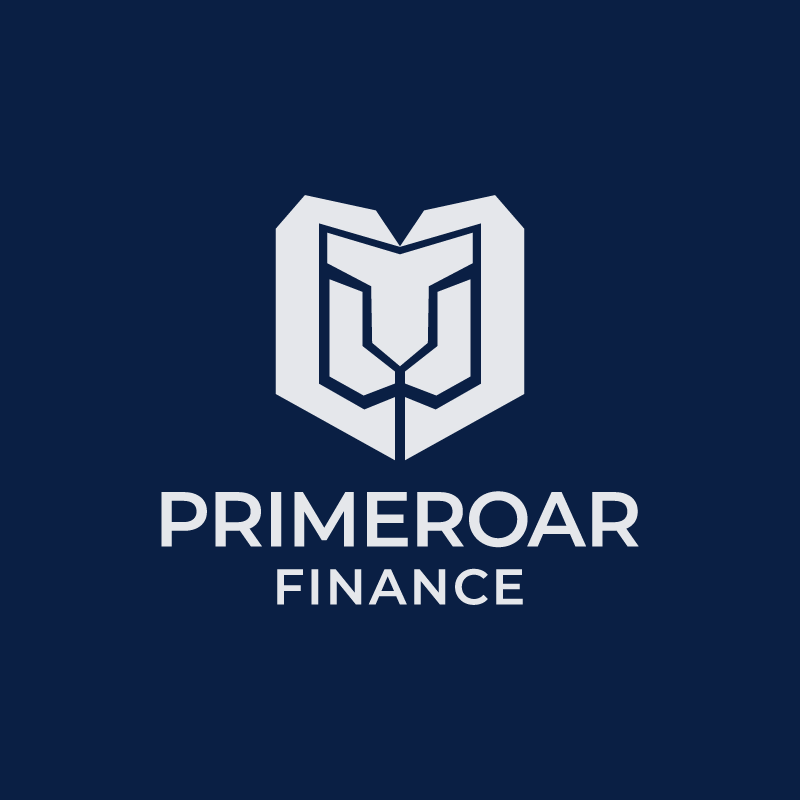
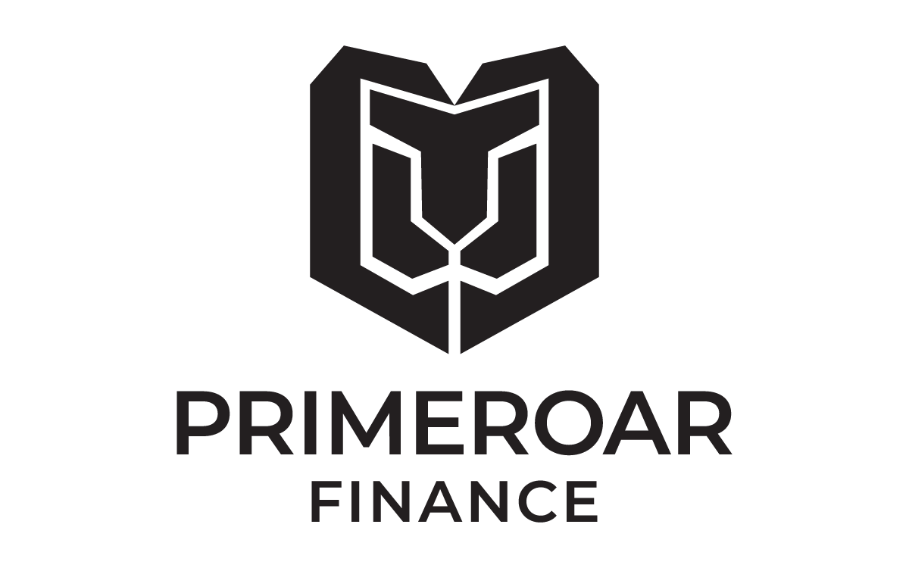
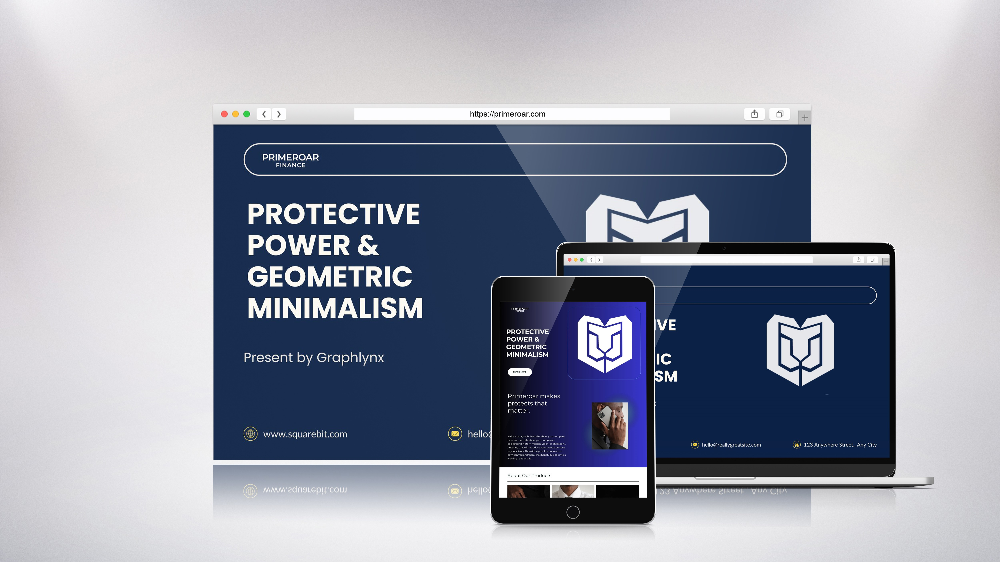
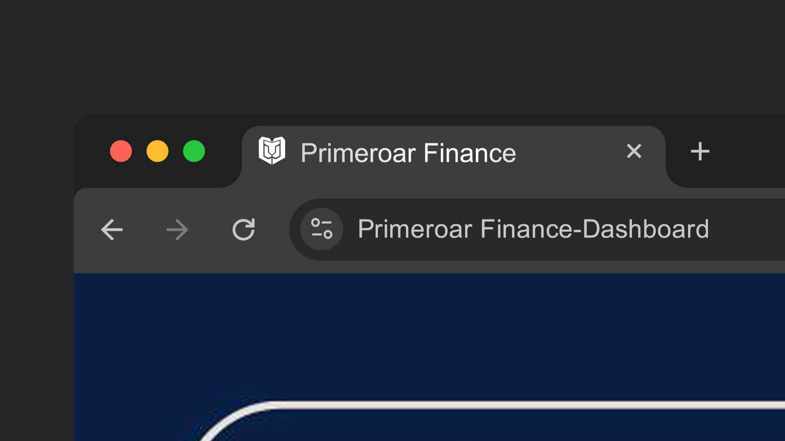
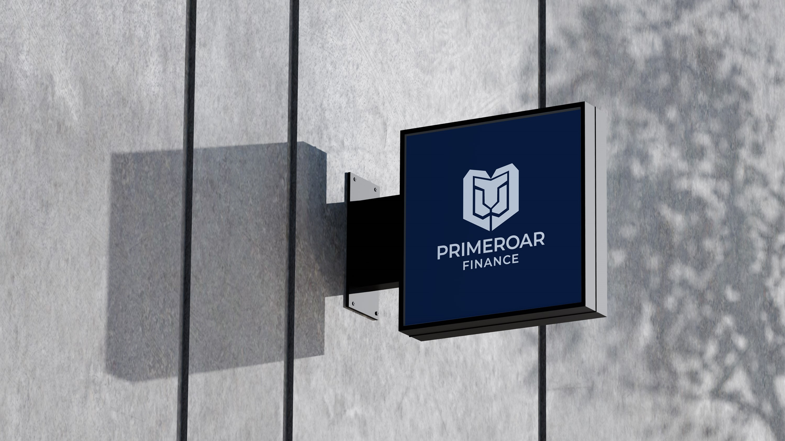
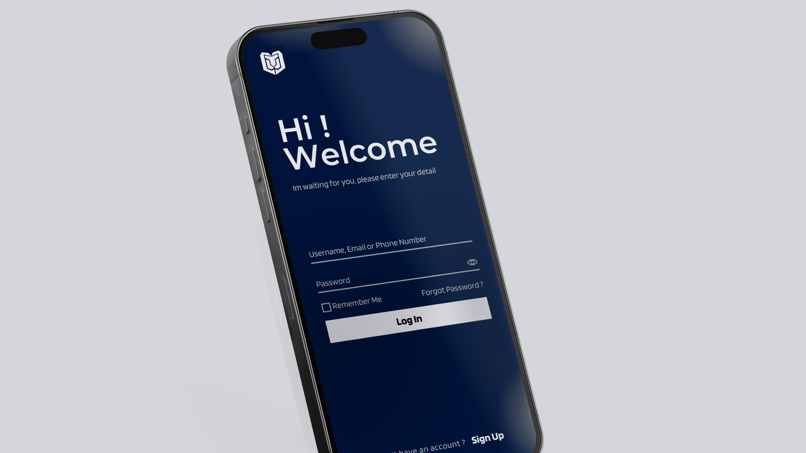

Primeroar Finance
Protective Power & Geometric Minimalism
Details
- Project Type
- Brand Identity
- Industry
- Financial Services
- Year
- 2025
Scope
- Services
-
- Logo Concept
- Visual Identity
- Brand Strategy
- Tools
-
- Adobe Illustrator
- Photoshop
The Brief
The Primeroar Finance identity is a masterclass in geometric minimalism, designed to project an image of unwavering strength and fiscal protection. The mark features a stylized lion—the universal symbol of leadership and courage—integrated into a structural shield.
This combination creates an immediate association with security, market dominance, and strategic growth, positioning the brand as a formidable player in the financial services landscape.
Concept & Thinking
The icon is a synthesis of organic power and mathematical precision. By distilling the lion’s features into clean, symmetrical lines, the mark avoids the clutter of traditional heraldry while retaining its authoritative weight.
The outer silhouette suggests a shield, emphasizing the brand’s commitment to safeguarding client assets. The upward-pointing angles within the mane and "ears" subtly reference growth trajectories and market peaks.
- Stylized Lion: A universal symbol of leadership and courage.
- Shield Silhouette: Emphasizes the safeguarding of client assets.
- Geometric Precision: Clean lines avoid clutter for modern authority.
- Upward Angles: Subtle references to growth trajectories and market peaks.
Typography
The wordmark is set in Montserrat Semi Bold, a geometric sans-serif celebrated for its structural integrity and balance. Chosen for its high x-height and open apertures, the typeface ensures maximum legibility across digital platforms and physical signage alike.
The semi-bold weight provides a solid foundation for the icon, echoing the stroke weights of the lion’s features to create a singular, cohesive visual unit.
Color Palette
The identity utilizes a sophisticated, high-contrast palette designed to evoke "Old Money" stability with a "New Tech" edge.
Oxford Blue
#0A1F44
Platinum Grey
#E5E7EB
White Base
#FFFFFF
Palette Logic:
Oxford Blue conveys intelligence, trust, and the calm confidence of an established institution.
Platinum Grey provides a clean, surgical contrast against the dark base, suggesting clarity of thought and precision in execution.
Logo Variations

Real-World Applications

Website
Primary digital application

Favicon
Scales for browser tabs

Building Signage
Physical presence

Mobile Interface
Client dashboard
Final Outcome
The Primeroar Finance logo delivers a visual narrative of "Protective Power." It is a versatile, scalable identity that functions as effectively on a favicon as it does on a skyscraper. By stripping away the ornamental, the design leaves behind only the essential: a brand that is built to endure, lead, and protect.